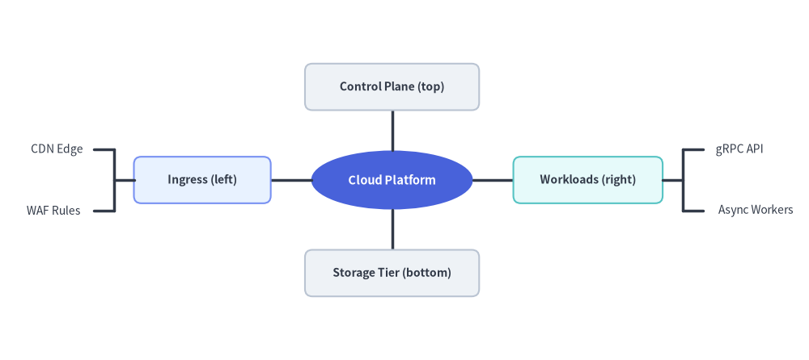
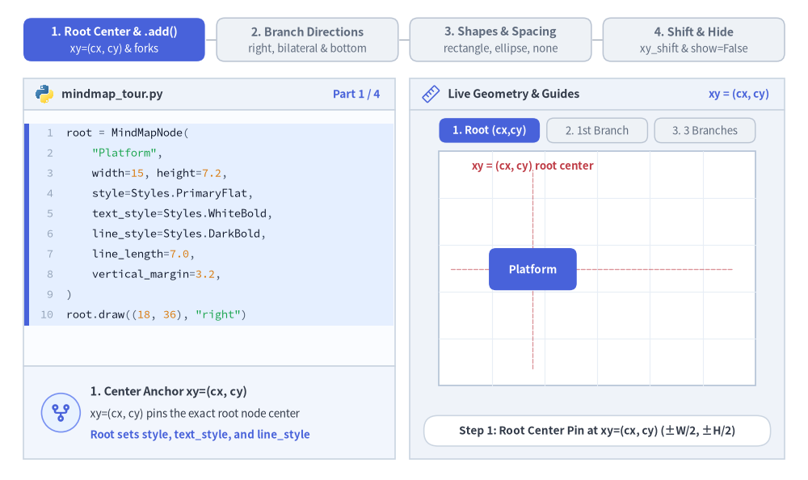
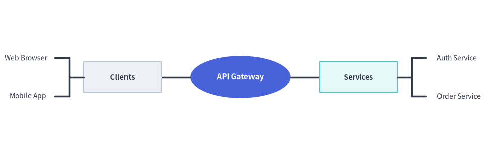
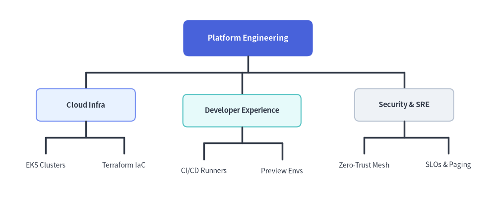

MindMap Component
The MindMapNode component renders multi-directional, radial mindmaps and hierarchical feature maps centered around a central root topic.
Branches can project to the left, right, top, or bottom, with automatic elbow connector routing.

Source Code
from drawlib.canvas import save, setup
from drawlib.smartarts import MindMapNode
from drawlib.styles import Styles
setup(width=130, height=58)
root = MindMapNode(
"Cloud Platform",
shape="ellipse",
width=26,
height=9.5,
style=Styles.PrimaryFlat,
text_style=Styles.WhiteBold.patch(text_size=10.5),
line_style=Styles.DarkBold,
line_length=6.5,
horizontal_margin=3.5,
vertical_margin=3.8,
children=[
# Left Branch (shape="rectangle" + leaf shape="none")
MindMapNode(
"Ingress (left)",
branch="left",
shape="rectangle",
width=22,
height=7.5,
style=Styles.PrimaryNeutral.patch(shape_r=1.2),
text_style=Styles.DarkBold.patch(text_size=10.0),
children=[
MindMapNode("CDN Edge", shape="none", text_style=Styles.Dark.patch(text_size=10.0)),
MindMapNode("WAF Rules", shape="none", text_style=Styles.Dark.patch(text_size=10.0)),
],
),
# Right Branch (shape="rectangle" + leaf shape="none")
MindMapNode(
"Workloads (right)",
branch="right",
shape="rectangle",
width=24,
height=7.5,
style=Styles.SecondaryNeutral.patch(shape_r=1.2),
text_style=Styles.DarkBold.patch(text_size=10.0),
children=[
MindMapNode("gRPC API", shape="none", text_style=Styles.Dark.patch(text_size=10.0)),
MindMapNode("Async Workers", shape="none", text_style=Styles.Dark.patch(text_size=10.0)),
],
),
# Top Branch (branch="top")
MindMapNode(
"Control Plane (top)",
branch="top",
shape="rectangle",
width=28,
height=7.5,
style=Styles.Neutral.patch(shape_r=1.2),
text_style=Styles.DarkBold.patch(text_size=10.0),
),
# Bottom Branch (branch="bottom")
MindMapNode(
"Storage Tier (bottom)",
branch="bottom",
shape="rectangle",
width=28,
height=7.5,
style=Styles.Neutral.patch(shape_r=1.2),
text_style=Styles.DarkBold.patch(text_size=10.0),
),
],
)
root.draw(xy=(63, 29))
save()
1. Core Concepts & Basic Usage
MindMapNode renders radial mindmaps and multi-directional hierarchies anchored at the Root Center xy=(cx, cy), automatically measuring subtree bounding boxes in a two-pass layout and routing orthogonal fork connectors at line_length / 2. You can project branches in any combination of "right", "left", "bottom", or "top", mix "rectangle", "ellipse", and borderless auto-sized "none" shapes, and fine-tune placement or animations via xy_shift, show, and scale:

Source Code
from __future__ import annotations
from drawlib.anim import Animation
from drawlib.canvas import save, setup
from drawlib.icons import code as code_icons
from drawlib.icons import phosphor
from drawlib.lines import line
from drawlib.shapes import circle, rectangle
from drawlib.smartarts import MindMapNode, SourceCode, SourceCodeStyles
from drawlib.styles import Styles
from drawlib.text import text
W, H = 138.0, 82.0
setup(width=W, height=H)
anim = Animation(fps=10.0, loop=0)
CODE_TEXT_SIZE = 10.0
PT_TO_CANVAS = W / 720.0
FONT_CANVAS = CODE_TEXT_SIZE * PT_TO_CANVAS
LINE_H = FONT_CANVAS * 1.8
PAD_Y = FONT_CANVAS * 1.2
CODE_STYLES = SourceCodeStyles.get("default", font_lang="en", text_size=CODE_TEXT_SIZE).patch(
box_style=Styles.Neutral.patch(shape_fill_color=(0, 0, 0, 0), shape_line_width=0),
)
PANE_HEADER = Styles.Neutral.patch(
shape_fill_color=(238, 243, 250),
shape_line_color=(203, 213, 225),
shape_line_width=1.2,
shape_r=0.0,
)
EDITOR_BODY = Styles.Neutral.patch(
shape_fill_color=(250, 252, 255),
shape_line_color=(203, 213, 225),
shape_line_width=1.2,
shape_r=0.0,
)
TAKEAWAY_BODY = Styles.Neutral.patch(
shape_fill_color=(242, 246, 253),
shape_line_color=(203, 213, 225),
shape_line_width=1.2,
shape_r=0.0,
)
STUDIO_BODY = Styles.Neutral.patch(
shape_fill_color=(239, 243, 249),
shape_line_color=(203, 213, 225),
shape_line_width=1.2,
shape_r=0.0,
)
PART_ITEMS = [
("1. Root Center & .add()", "xy=(cx, cy) & forks"),
("2. Branch Directions", "right, bilateral & bottom"),
("3. Shapes & Spacing", "rectangle, ellipse, none"),
("4. Shift & Hide", "xy_shift & show=False"),
]
def draw_step_bar(active_part: int) -> None:
"""Draw top 4-part progress bar (active_part is 1..4)."""
pill_w = 31.0
pill_h = 7.4
gap = 2.0
start_x = 4.0 + pill_w / 2.0
cy = 75.2
for idx, (label, sublabel) in enumerate(PART_ITEMS, start=1):
cx = start_x + (idx - 1) * (pill_w + gap)
if idx > 1:
prev_cx = cx - (pill_w + gap)
line(
(prev_cx + pill_w / 2.0 + 0.2, cy),
(cx - pill_w / 2.0 - 0.2, cy),
style=Styles.PrimaryBold if idx <= active_part else Styles.MutedThin,
)
if idx == active_part:
st = Styles.PrimaryFlat.patch(shape_r=1.4)
tst = Styles.WhiteBold.patch(text_size=10.3)
sub_tst = Styles.White.patch(text_size=9.5)
elif idx < active_part:
st = Styles.PrimaryNeutral.patch(shape_r=1.4, shape_line_width=1.1)
tst = Styles.PrimaryBold.patch(text_size=10.3)
sub_tst = Styles.Primary.patch(text_size=9.5)
else:
st = Styles.Neutral.patch(shape_r=1.4, shape_line_width=1.1)
tst = Styles.MutedBold.patch(text_size=10.3)
sub_tst = Styles.Muted.patch(text_size=9.5)
rectangle((cx, cy), width=pill_w, height=pill_h, style=st)
text((cx, cy + 1.35), label, style=tst)
text((cx, cy - 1.55), sublabel, style=sub_tst)
def draw_left_pane(
active_part: int,
code_lines: list[str],
hl_range: tuple[int, int],
icon_fn: object,
summary_title: str,
summary_line1: str,
summary_line2: str,
) -> None:
"""Draw left Python code editor + bottom concept takeaway card."""
x0, w = 4.0, 63.5
cx = x0 + w / 2.0
top_y = 63.2
header_h = 5.4
editor_h = 43.8
takeaway_h = 15.8
rectangle((cx, top_y + header_h / 2.0), width=w, height=header_h, style=PANE_HEADER)
code_icons.python((x0 + 3.6, top_y + header_h / 2.0), width=3.4, style=Styles.Neutral)
text(
(x0 + 6.5, top_y + header_h / 2.0),
"mindmap_tour.py",
style=Styles.DarkBold.patch(text_size=10.2, halign="left"),
)
text(
(x0 + w - 2.6, top_y + header_h / 2.0),
f"Part {active_part} / 4",
style=Styles.PrimaryBold.patch(text_size=9.8, halign="right"),
)
rectangle((cx, top_y - editor_h / 2.0), width=w, height=editor_h, style=EDITOR_BODY)
hl_start, hl_end = hl_range
hl_top = top_y - PAD_Y - hl_start * LINE_H
hl_bot = top_y - PAD_Y - (hl_end + 1) * LINE_H
hl_cy = (hl_top + hl_bot) / 2.0
hl_h = hl_top - hl_bot
rectangle(
(cx, hl_cy),
width=w - 0.6,
height=hl_h,
style=Styles.Neutral.patch(shape_fill_color=(229, 239, 255), shape_line_width=0),
)
rectangle(
(x0 + 0.55, hl_cy),
width=0.9,
height=hl_h,
style=Styles.PrimaryFlat.patch(shape_line_width=0),
)
SourceCode.draw(
xy=(x0, top_y),
width=w,
code="\n".join(code_lines),
styles=CODE_STYLES,
code_lang="python",
show_linenum=True,
align="top_left",
)
take_cy = 3.6 + takeaway_h / 2.0
rectangle((cx, take_cy), width=w, height=takeaway_h, style=TAKEAWAY_BODY)
circle(
(x0 + 6.4, take_cy),
radius=3.3,
style=Styles.PrimaryNeutral.patch(shape_line_width=1.2),
)
icon_fn((x0 + 6.4, take_cy), width=3.8, style=Styles.PrimaryBold) # type: ignore[operator]
text(
(x0 + 11.4, take_cy + 3.6),
summary_title,
style=Styles.DarkBold.patch(text_size=10.4, halign="left"),
)
text(
(x0 + 11.4, take_cy - 0.2),
summary_line1,
style=Styles.Dark.patch(text_size=9.7, halign="left"),
)
text(
(x0 + 11.4, take_cy - 3.8),
summary_line2,
style=Styles.PrimaryBold.patch(text_size=9.6, halign="left"),
)
def draw_geometry_studio(param_badge: str, footer_caption: str) -> tuple[float, float]:
"""Draw right geometry lab shell, inner coordinate sheet with subtle grid, and footer."""
x0, w = 70.0, 64.0
cx = x0 + w / 2.0
top_y = 63.2
header_h = 5.4
body_h = 59.6
rectangle((cx, top_y + header_h / 2.0), width=w, height=header_h, style=PANE_HEADER)
phosphor.ruler((x0 + 3.6, top_y + header_h / 2.0), width=3.4, style=Styles.Primary)
text(
(x0 + 6.5, top_y + header_h / 2.0),
"Live Geometry & Guides",
style=Styles.DarkBold.patch(text_size=10.2, halign="left"),
)
text(
(x0 + w - 2.6, top_y + header_h / 2.0),
param_badge,
style=Styles.PrimaryBold.patch(text_size=9.6, halign="right"),
)
rectangle((cx, 3.6 + body_h / 2.0), width=w, height=body_h, style=STUDIO_BODY)
sheet_cx, sheet_cy = cx, 36.2
sheet_w, sheet_h = 54.0, 40.0
sx0, sy0 = sheet_cx - sheet_w / 2.0, sheet_cy - sheet_h / 2.0
rectangle(
(sheet_cx, sheet_cy),
width=sheet_w,
height=sheet_h,
style=Styles.Neutral.patch(
shape_fill_color=(255, 255, 255),
shape_line_color=(180, 194, 214),
shape_line_width=1.2,
),
)
g_st = Styles.MutedThin.patch(line_color=(232, 238, 246), line_width=0.8)
for gx in range(1, 6):
vx = sx0 + gx * (sheet_w / 6.0)
line((vx, sy0), (vx, sy0 + sheet_h), style=g_st)
for gy in range(1, 5):
vy = sy0 + gy * (sheet_h / 5.0)
line((sx0, vy), (sx0 + sheet_w, vy), style=g_st)
rectangle(
(cx, 8.4),
width=59.2,
height=5.2,
style=Styles.Neutral.patch(
shape_fill_color=(255, 255, 255),
shape_line_color=(203, 213, 225),
shape_line_width=1.1,
shape_r=2.4,
),
text=footer_caption,
text_style=Styles.DarkBold.patch(text_size=9.8),
)
return sheet_cx, sheet_cy
def draw_sub_pills(scx: float, labels: list[str], active_idx: int) -> None:
"""Draw 3-pill sub-step indicator above the 54x40 coordinate sheet."""
pw, ph, pgap = 17.2, 4.2, 1.2
p_start = scx - (3 * pw + 2 * pgap) / 2.0 + pw / 2.0
for idx, lbl in enumerate(labels):
px = p_start + idx * (pw + pgap)
if idx == active_idx:
pst = Styles.PrimaryFlat.patch(shape_r=1.2)
ptst = Styles.WhiteBold.patch(text_size=9.5)
elif idx < active_idx:
pst = Styles.PrimaryNeutral.patch(shape_r=1.2, shape_line_width=1.0)
ptst = Styles.PrimaryBold.patch(text_size=9.5)
else:
pst = Styles.Neutral.patch(shape_r=1.2, shape_line_width=1.0)
ptst = Styles.Muted.patch(text_size=9.5)
rectangle((px, 59.7), width=pw, height=ph, style=pst, text=lbl, text_style=ptst)
ROOT_TX = Styles.WhiteBold.patch(text_size=9.8)
NODE_TX = Styles.DarkBold.patch(text_size=9.8)
LEAF_TX = Styles.Dark.patch(text_size=9.7)
# =========================================================================
# Part 1: Root Center (cx, cy) & Imperative .add() Hierarchy (3 frames)
# =========================================================================
P1_STATES = [
(
0,
3.3,
(0, 9),
[
"root = MindMapNode(",
' "Platform",',
" width=15, height=7.2,",
" style=Styles.PrimaryFlat,",
" text_style=Styles.WhiteBold,",
" line_style=Styles.DarkBold,",
" line_length=7.0,",
" vertical_margin=3.2,",
")",
'root.draw((18, 36), "right")',
],
"xy = (cx, cy)",
"Step 1: Root Center Pin at xy=(cx, cy) (±W/2, ±H/2)",
"1. Center Anchor xy=(cx, cy)",
"xy=(cx, cy) pins the exact root node center",
"Root sets style, text_style, and line_style",
),
(
1,
3.3,
(2, 7),
[
"root = MindMapNode(",
' "Platform", width=15, ...)',
"root.add(",
' "API",',
" width=12.8, height=6.8,",
" style=Styles.Neutral,",
" text_style=Styles.DarkBold,",
")",
'root.draw((18, 36), "right")',
],
'root.add("API")',
"Step 2: First Child Connects Horizontally Across line_length=7.0",
"2. Imperative Branching (.add())",
"parent.add(text) appends a child MindMapNode",
"Single child connects straight across 7.0",
),
(
3,
3.4,
(5, 9),
[
"root = MindMapNode(",
' "Platform", width=15, ...)',
"n_st = Styles.Neutral",
"p_st = Styles.PrimaryNeutral",
"s_st = Styles.SecondaryNeutral",
'root.add("API", style=n_st, ...)',
'root.add("Data", style=p_st, ...)',
'root.add("Auth", style=s_st, ...)',
"root.draw(",
' xy=(18, 36), branch="right")',
],
"3 right branches",
"Step 3: Two-Pass Layout Centers 3 Siblings & Routes Fork Bar",
"3. Auto-Centered Fork Routing",
"Pass 1 measures extents; Pass 2 centers rows",
"Orthogonal fork sits at line_length / 2",
),
]
for idx_p1, (n_ch, dur, hl_rng, c_lines, badge, foot, s_t, s_1, s_2) in enumerate(P1_STATES):
with anim.frame(duration=dur):
draw_step_bar(1)
draw_left_pane(1, c_lines, hl_rng, phosphor.git_fork, s_t, s_1, s_2)
scx, _ = draw_geometry_studio(badge, foot)
draw_sub_pills(scx, ["1. Root (cx,cy)", "2. 1st Branch", "3. 3 Branches"], idx_p1)
rcx, rcy = 91.0, 36.0
rw, rh, llen, vm = 15.0, 7.2, 7.0, 3.2
# Center crosshair guides through (rcx, rcy)
line((77.0, rcy), (125.0, rcy), style=Styles.DangerDashed.patch(line_width=0.95, alpha=0.55))
line((rcx, 19.0), (rcx, 53.0), style=Styles.DangerDashed.patch(line_width=0.95, alpha=0.55))
root = MindMapNode(
"Platform",
width=rw,
height=rh,
style=Styles.PrimaryFlat.patch(shape_r=1.2),
text_style=ROOT_TX,
line_style=Styles.DarkBold,
line_length=llen,
vertical_margin=vm,
)
ch_specs = [
("API", Styles.Neutral.patch(shape_r=1.1)),
("Data", Styles.PrimaryNeutral.patch(shape_r=1.1)),
("Auth", Styles.SecondaryNeutral.patch(shape_r=1.1)),
]
for label_c, st_c in ch_specs[:n_ch]:
root.add(label_c, width=12.8, height=6.8, style=st_c, text_style=NODE_TX)
root.draw(xy=(rcx, rcy), branch="right")
text(
(rcx, 53.6),
"xy = (cx, cy) root center",
style=Styles.DangerBold.patch(text_size=9.5),
)
if n_ch == 1:
x_r = rcx + rw / 2.0
line((x_r, 40.4), (x_r, 43.2), style=Styles.PrimaryDashed.patch(line_width=0.9))
line(
(x_r + llen, 40.4),
(x_r + llen, 43.2),
style=Styles.PrimaryDashed.patch(line_width=0.9),
)
line(
(x_r + 0.2, 41.8),
(x_r + llen - 0.2, 41.8),
arrow_head="<->",
style=Styles.PrimaryBold.patch(line_width=1.2),
)
text(
(x_r + llen / 2.0, 44.6),
"line_length = 7.0",
style=Styles.PrimaryBold.patch(text_size=9.5),
)
elif n_ch == 3:
jx = rcx + rw / 2.0 + llen / 2.0
text(
(jx - 1.2, 18.2),
"fork @ line_length / 2",
style=Styles.PrimaryBold.patch(text_size=9.5),
)
# =========================================================================
# Part 2: Multi-Directional Branching (right, bilateral, bottom) (3 frames)
# =========================================================================
P2_STATES = [
(
"right",
3.3,
(6, 8),
[
"root = MindMapNode(",
' "Platform", width=14.2, ...)',
'for lbl in ("Edge", "Auth",',
' "API", "Data"):',
" root.add(lbl, width=12, ...)",
"# Default fallback direction:",
"root.draw(",
" xy=(16, 36),",
' branch="right")',
],
'branch = "right"',
"Unidirectional Right Flow: All 4 Children Extend +X",
'1. Rightward Tree (branch="right")',
"Projects all unassigned child branches +X",
"Great for left-to-right feature taxonomies",
),
(
"bilateral",
3.4,
(2, 7),
[
"root = MindMapNode(",
' "Platform", width=13.8, ...)',
"# Left-side branches (-X):",
'root.add("Edge", branch="left")',
'root.add("Auth", branch="left")',
"# Right-side branches (+X):",
'root.add("API", branch="right")',
'root.add("Data", branch="right")',
"root.draw(xy=(27, 36))",
],
'"left" + "right"',
"Balanced Bilateral Mindmap Centered Around xy=(cx, cy)",
"2. Bilateral Radial Mindmap",
"Mix branch='left' & 'right' on the same root",
"Centers left (-X) and right (+X) groups at xy",
),
(
"bottom",
3.4,
(6, 8),
[
"root = MindMapNode(",
' "Platform", width=14.8, ...)',
'for lbl in ("Edge", "Auth",',
' "API", "Data"):',
" root.add(lbl, width=10.2)",
"# Top-down org / WBS tree (-Y):",
"root.draw(",
" xy=(27, 45),",
' branch="bottom")',
],
'branch = "bottom"',
"Top-Down Org / WBS Hierarchy: Children Spread Horizontally",
'3. Top-Down Hierarchy (branch="bottom")',
"Default branch='bottom' grows downward (-Y)",
"Spaces sibling columns via horizontal_margin",
),
]
for idx_p2, (dir_mode, dur, hl_rng, c_lines, badge, foot, s_t, s_1, s_2) in enumerate(P2_STATES):
with anim.frame(duration=dur):
draw_step_bar(2)
draw_left_pane(2, c_lines, hl_rng, phosphor.arrows_out_cardinal, s_t, s_1, s_2)
scx, scy = draw_geometry_studio(badge, foot)
draw_sub_pills(scx, ["1. Right Flow", "2. Bilateral", "3. Top-Down"], idx_p2)
items_4 = [
("Edge", Styles.Neutral.patch(shape_r=1.0)),
("Auth", Styles.PrimaryNeutral.patch(shape_r=1.0)),
("API", Styles.SecondaryNeutral.patch(shape_r=1.0)),
("Data", Styles.Neutral.patch(shape_r=1.0)),
]
if dir_mode == "right":
root = MindMapNode(
"Platform",
width=14.2,
height=6.8,
style=Styles.PrimaryFlat.patch(shape_r=1.2),
text_style=ROOT_TX,
line_style=Styles.DarkBold,
line_length=6.6,
vertical_margin=1.9,
)
for lbl, st_c in items_4:
root.add(lbl, width=12.0, height=6.0, style=st_c, text_style=NODE_TX)
root.draw(xy=(90.5, 33.4), branch="right")
line(
(99.0, 50.8),
(116.5, 50.8),
arrow_head="->",
style=Styles.PrimaryBold.patch(line_width=1.25),
)
text(
(107.8, 53.3),
'branch="right" (+X)',
style=Styles.PrimaryBold.patch(text_size=9.5),
)
elif dir_mode == "bilateral":
root = MindMapNode(
"Platform",
width=13.8,
height=6.8,
style=Styles.PrimaryFlat.patch(shape_r=1.2),
text_style=ROOT_TX,
line_style=Styles.DarkBold,
line_length=5.4,
vertical_margin=4.2,
)
for idx_c, (lbl, st_c) in enumerate(items_4):
b_side = "left" if idx_c < 2 else "right"
root.add(lbl, branch=b_side, width=11.0, height=6.6, style=st_c, text_style=NODE_TX)
root.draw(xy=(scx, 35.4))
line((scx - 4.0, 50.5), (79.5, 50.5), arrow_head="->", style=Styles.SecondaryBold.patch(line_width=1.25))
text((88.5, 53.0), 'branch="left"', style=Styles.SecondaryBold.patch(text_size=9.5))
line((scx + 4.0, 50.5), (124.5, 50.5), arrow_head="->", style=Styles.PrimaryBold.patch(line_width=1.25))
text((115.5, 53.0), 'branch="right"', style=Styles.PrimaryBold.patch(text_size=9.5))
text((scx, 20.0), "Centered at xy = (cx, cy)", style=Styles.MutedBold.patch(text_size=9.5))
else:
root = MindMapNode(
"Platform",
width=14.8,
height=6.8,
style=Styles.PrimaryFlat.patch(shape_r=1.2),
text_style=ROOT_TX,
line_style=Styles.DarkBold,
line_length=7.8,
horizontal_margin=2.2,
)
for lbl, st_c in items_4:
root.add(lbl, width=10.2, height=6.6, style=st_c, text_style=NODE_TX)
root.draw(xy=(scx, 45.4), branch="bottom")
line((scx, 26.2), (scx, 20.6), arrow_head="->", style=Styles.PrimaryBold.patch(line_width=1.25))
text((scx, 18.4), 'branch="bottom" (-Y top-down)', style=Styles.PrimaryBold.patch(text_size=9.5))
# =========================================================================
# Part 3: Node Shapes (rectangle, ellipse, none) & Spacing (3 frames)
# =========================================================================
P3_STATES = [
(
"rectangle",
3.3,
(2, 3),
[
"root = MindMapNode(",
' "Platform",',
' shape="rectangle",',
" width=14.5, height=7.2,",
" style=Styles.PrimaryFlat,",
" ...)",
'root.add("API", ...)',
'root.add("Data", ...)',
'root.add("Auth", ...)',
],
'shape = "rectangle"',
"Default Rectangular Cards (Optional Rounded shape_r)",
'1. Rectangular Nodes (shape="rectangle")',
"Default shape='rectangle' draws crisp cards",
"Children inherit parent shape automatically",
),
(
"ellipse",
3.4,
(2, 6),
[
"root = MindMapNode(",
' "Platform",',
' shape="ellipse",',
" width=16.2, height=7.8,",
" style=Styles.PrimaryFlat,",
" ...)",
'# Children inherit "ellipse"!',
'root.add("API", width=13.2, ...)',
'root.add("Data", width=13.2)',
],
'shape = "ellipse"',
"Cascaded Elliptical Nodes Across Root & Child Branches",
'2. Elliptical Nodes (shape="ellipse")',
"Setting shape='ellipse' cascades to children",
"Use slightly wider width for comfortable fit",
),
(
"none",
3.4,
(7, 9),
[
"root = MindMapNode(",
' "Platform", shape="ellipse",',
" line_length=5.6,",
" vertical_margin=3.2, ...)",
"api = root.add(",
' "API", shape="rectangle", ...',
")",
"# Auto-sized borderless leaves:",
'api.add("REST", shape="none")',
'api.add("gRPC", shape="none")',
],
'shape = "none"',
"Mixed Shapes + Auto-Sized Borderless Text Leaves (shape='none')",
'3. Borderless Leaves (shape="none")',
"shape='none' auto-measures clean text leaves",
"Mix ellipse root, box groups & text leaves",
),
]
for idx_p3, (sh_mode, dur, hl_rng, c_lines, badge, foot, s_t, s_1, s_2) in enumerate(P3_STATES):
with anim.frame(duration=dur):
draw_step_bar(3)
draw_left_pane(3, c_lines, hl_rng, phosphor.shapes, s_t, s_1, s_2)
scx, _ = draw_geometry_studio(badge, foot)
draw_sub_pills(scx, ["1. rectangle", "2. ellipse", "3. none + gaps"], idx_p3)
if sh_mode in ("rectangle", "ellipse"):
is_el = sh_mode == "ellipse"
root = MindMapNode(
"Platform",
shape="ellipse" if is_el else "rectangle",
width=16.2 if is_el else 14.5,
height=7.8 if is_el else 7.2,
style=Styles.PrimaryFlat if is_el else Styles.PrimaryFlat.patch(shape_r=1.2),
text_style=ROOT_TX,
line_style=Styles.DarkBold,
line_length=6.8,
vertical_margin=3.2,
)
for lbl, st_c in (
("API", Styles.Neutral),
("Data", Styles.PrimaryNeutral),
("Auth", Styles.SecondaryNeutral),
):
st_use = st_c if is_el else st_c.patch(shape_r=1.1)
root.add(lbl, width=13.2 if is_el else 12.6, height=6.8, style=st_use, text_style=NODE_TX)
root.draw(xy=(90.5, 36.0), branch="right")
text(
(scx, 18.6),
f'All nodes render with shape="{sh_mode}"',
style=Styles.PrimaryBold.patch(text_size=9.5),
)
else:
root = MindMapNode(
"Platform",
shape="ellipse",
width=15.0,
height=7.4,
style=Styles.PrimaryFlat,
text_style=ROOT_TX,
line_style=Styles.DarkBold,
line_length=5.6,
vertical_margin=3.2,
)
api_n = root.add(
"API",
shape="rectangle",
width=10.8,
height=6.6,
style=Styles.PrimaryNeutral.patch(shape_r=1.0),
text_style=NODE_TX,
line_length=5.0,
vertical_margin=1.4,
)
api_n.add("REST", shape="none", text_style=LEAF_TX)
api_n.add("gRPC", shape="none", text_style=LEAF_TX)
data_n = root.add(
"Data",
shape="rectangle",
width=10.8,
height=6.6,
style=Styles.SecondaryNeutral.patch(shape_r=1.0),
text_style=NODE_TX,
line_length=5.0,
vertical_margin=1.4,
)
data_n.add("SQL", shape="none", text_style=LEAF_TX)
data_n.add("Cache", shape="none", text_style=LEAF_TX)
root.draw(xy=(87.5, 35.4), branch="right")
# Caliper for line_length = 5.6 between root right (95.0) and API left (100.6)
line((95.0, 48.0), (95.0, 51.6), style=Styles.PrimaryDashed.patch(line_width=0.9))
line((100.6, 48.0), (100.6, 51.6), style=Styles.PrimaryDashed.patch(line_width=0.9))
line(
(95.2, 49.8),
(100.4, 49.8),
arrow_head="<->",
style=Styles.PrimaryBold.patch(line_width=1.15),
)
text((97.8, 53.0), "line_length=5.6", style=Styles.PrimaryBold.patch(text_size=9.5))
rectangle(
(120.4, 35.4),
width=10.8,
height=29.2,
style=Styles.SecondaryDashed.patch(shape_fill_color=(0, 0, 0, 0), shape_line_width=1.2),
)
text((117.5, 18.2), 'shape="none" leaves', style=Styles.SecondaryBold.patch(text_size=9.5))
# =========================================================================
# Part 4: Fine-Tuning Shift (xy_shift), Hide (show=False) & Scale (3 frames)
# =========================================================================
P4_STATES = [
(
"shift",
3.3,
(2, 6),
[
"root = MindMapNode(",
' "Platform", width=15, ...)',
"# Offset top branch +3.0 upward:",
"api = root.add(",
' "API",',
" xy_shift=(0, 3.0), ...",
")",
'data = root.add("Data", ...)',
'auth = root.add("Auth", ...)',
],
"xy_shift = (0, 3.0)",
"Nudges API Branch +3.0 Upward & Auto-Extends Fork Trunk",
"1. Post-Layout Offset (xy_shift)",
"Applies (dx, dy) after two-pass measurement",
"Fork trunk stretches automatically to match",
),
(
"hide",
3.4,
(5, 6),
[
"root = MindMapNode(",
' "Platform", width=15, ...)',
'api = root.add("API", ...)',
'data = root.add("Data", ...)',
'auth = root.add("Auth", ...)',
"# Hide branch & trim fork bar:",
"auth.show = False",
"root.draw(",
' xy=(18, 36), branch="right")',
],
"auth.show = False",
"Hides Auth Branch & Trims Fork Bar Without Shifting Siblings",
"2. Layout-Preserving show=False",
"Hides branch & trims fork bar to Data",
"Keeps API and Data locked at exact slots",
),
(
"scale",
3.5,
(6, 8),
[
"root = MindMapNode(",
' "Platform", width=15, ...)',
'api = root.add("API", ...)',
'data = root.add("Data", ...)',
'auth = root.add("Auth", ...)',
"auth.show = True",
"# Proportional scale around xy:",
'root.draw((18, 36), "right",',
" scale=0.85)",
],
"scale = 0.85",
"Proportional 0.85x Scaling Centered on Root Anchor xy",
"3. Proportional Scaling (scale=0.85)",
"Scales boxes, forks, and text uniformly",
"Root center anchor xy=(cx, cy) stays pinned",
),
]
for idx_p4, (p4_mode, dur, hl_rng, c_lines, badge, foot, s_t, s_1, s_2) in enumerate(P4_STATES):
with anim.frame(duration=dur):
draw_step_bar(4)
draw_left_pane(4, c_lines, hl_rng, phosphor.arrows_in, s_t, s_1, s_2)
scx, _ = draw_geometry_studio(badge, foot)
draw_sub_pills(scx, ["1. xy_shift", "2. show=False", "3. scale=0.85"], idx_p4)
rcx, rcy = 90.5, 35.2
rw, rh, llen, vm, cw, ch = 15.0, 7.2, 7.0, 3.2, 12.8, 6.8
child_cx = rcx + rw / 2.0 + llen + cw / 2.0 # 111.4
if p4_mode == "shift":
# Ghost dashed box at original unshifted API position (child_cx, rcy + ch + vm = 45.2)
orig_y = rcy + ch + vm
rectangle(
(child_cx, orig_y),
width=cw,
height=ch,
style=Styles.DangerDashed.patch(shape_fill_color=(0, 0, 0, 0), shape_line_width=1.3),
)
if p4_mode == "scale":
# 1.0x reference box vs 0.85x scaled box around root center (rcx, rcy)
x_min0, x_max0 = rcx - rw / 2.0 - 1.3, child_cx + cw / 2.0 + 1.3
y_min0, y_max0 = rcy - 1.5 * ch - vm - 1.3, rcy + 1.5 * ch + vm + 1.3
rectangle(
((x_min0 + x_max0) / 2.0, (y_min0 + y_max0) / 2.0),
width=x_max0 - x_min0,
height=y_max0 - y_min0,
style=Styles.MutedDashed.patch(shape_fill_color=(0, 0, 0, 0), shape_line_width=1.1),
)
sx_min = rcx + (x_min0 - rcx) * 0.85
sx_max = rcx + (x_max0 - rcx) * 0.85
sy_min = rcy + (y_min0 - rcy) * 0.85
sy_max = rcy + (y_max0 - rcy) * 0.85
rectangle(
((sx_min + sx_max) / 2.0, (sy_min + sy_max) / 2.0),
width=sx_max - sx_min,
height=sy_max - sy_min,
style=Styles.PrimaryDashed.patch(shape_fill_color=(0, 0, 0, 0), shape_line_width=1.3),
)
line(
(x_max0 - 0.2, y_max0 - 0.2),
(sx_max + 0.2, sy_max + 0.2),
arrow_head="->",
style=Styles.PrimaryBold.patch(line_width=1.3),
)
text(
(scx, 18.2),
"0.85x scaled around root center xy",
style=Styles.PrimaryBold.patch(text_size=9.5),
)
root = MindMapNode(
"Platform",
width=rw,
height=rh,
style=Styles.PrimaryFlat.patch(shape_r=1.2),
text_style=ROOT_TX,
line_style=Styles.DarkBold,
line_length=llen,
vertical_margin=vm,
)
root.add(
"API",
width=cw,
height=ch,
style=Styles.Neutral.patch(shape_r=1.1),
text_style=NODE_TX,
xy_shift=(0.0, 3.0) if p4_mode == "shift" else None,
)
root.add(
"Data",
width=cw,
height=ch,
style=Styles.PrimaryNeutral.patch(shape_r=1.1),
text_style=NODE_TX,
)
root.add(
"Auth",
width=cw,
height=ch,
style=Styles.SecondaryNeutral.patch(shape_r=1.1),
text_style=NODE_TX,
show=(p4_mode != "hide"),
)
root.draw(xy=(rcx, rcy), branch="right", scale=0.85 if p4_mode == "scale" else 1.0)
if p4_mode == "shift":
orig_y = rcy + ch + vm
ax = child_cx + cw / 2.0 + 2.2
line(
(ax, orig_y),
(ax, orig_y + 3.0),
arrow_head="->",
style=Styles.DangerBold.patch(line_width=1.3),
)
text(
(ax + 1.2, orig_y + 1.5),
"+3.0",
style=Styles.DangerBold.patch(text_size=9.5, halign="left"),
)
text(
(scx, 18.2),
"Dashed = auto slot • Solid = shifted +3.0",
style=Styles.DangerBold.patch(text_size=9.5),
)
elif p4_mode == "hide":
hide_y = rcy - (ch + vm)
rectangle(
(child_cx, hide_y),
width=cw,
height=ch,
style=Styles.DangerDashed.patch(shape_fill_color=(0, 0, 0, 0), shape_line_width=1.25),
text="Auth (off)",
text_style=Styles.DangerBold.patch(text_size=9.5),
)
text(
(scx, 18.2),
"Fork bar trims to Data • Siblings stay fixed",
style=Styles.PrimaryBold.patch(text_size=9.5),
)
else:
# External center crosshairs so "Platform" stays 100% legible
line(
(77.8, rcy),
(rcx - rw * 0.85 / 2.0 - 0.5, rcy),
style=Styles.DangerBold.patch(line_width=1.2),
)
line(
(rcx, rcy + rh * 0.85 / 2.0 + 0.5),
(rcx, rcy + 6.2),
style=Styles.DangerBold.patch(line_width=1.2),
)
text((rcx, rcy + 8.0), "xy pinned", style=Styles.DangerBold.patch(text_size=9.5))
save()
- Root Center Anchor &
.add()(xy,add): Pins the root node's exact center atxy=(cx, cy), automatically measuring subtree heights/widths and routing orthogonal fork junctions atline_length / 2. - Multi-Directional Branching (
branch): Directs trees rightward ("right"), leftward ("left"), downward ("bottom"), or upward ("top"), or combines per-child directions on the same root for bilateral mindmaps. - Node Shapes & Spacing (
shape,line_length,vertical_margin): Mixes"rectangle","ellipse", and borderless auto-sized"none"text leaves while controlling connector span and sibling gaps. - Post-Layout Shift, Visibility & Scale (
xy_shift,show,scale): Nudges individual branches viaxy_shift=(dx, dy), hides branches without shifting siblings vianode.show = False, and scales aroundxyviascale.
2. Quick Example: Architecture Topology Map
from drawlib.canvas import setup
from drawlib.smartarts import MindMapNode
from drawlib.styles import Styles
setup(width=130, height=40)
root = MindMapNode(
"API Gateway",
shape="ellipse",
width=26,
height=11,
style=Styles.PrimaryFlat,
text_style=Styles.WhiteBold.patch(text_size=11.0),
line_style=Styles.DarkBold,
line_length=7.5,
horizontal_margin=4.0,
vertical_margin=4.0,
children=[
MindMapNode(
"Clients", branch="left", shape="rectangle", width=20, height=8, style=Styles.Neutral,
text_style=Styles.DarkBold.patch(text_size=10.5),
children=[
MindMapNode("Web Browser", shape="none", text_style=Styles.Dark.patch(text_size=10.0)),
MindMapNode("Mobile App", shape="none", text_style=Styles.Dark.patch(text_size=10.0)),
],
),
MindMapNode(
"Services", branch="right", shape="rectangle", width=20, height=8, style=Styles.SecondaryNeutral,
text_style=Styles.DarkBold.patch(text_size=10.5),
children=[
MindMapNode("Auth Service", shape="none", text_style=Styles.Dark.patch(text_size=10.0)),
MindMapNode("Order Service", shape="none", text_style=Styles.Dark.patch(text_size=10.0)),
],
),
],
)
root.draw(xy=(62, 20))

3. Imperative Construction (.add()) & Top-Down Hierarchy (branch="bottom", xy_shift)
Instead of passing nested children=[...] lists to the constructor, you can construct mindmaps and organization trees imperatively with parent.add(text, ...) -> MindMapNode. When calling root.draw(xy, branch="bottom"), all branches default to flowing top-down (-y). You can also fine-tune any node's placement relative to its auto-calculated position using xy_shift=(dx, dy).
from drawlib.canvas import save, setup
from drawlib.smartarts import MindMapNode
from drawlib.styles import Styles
setup(width=130, height=54)
root = MindMapNode(
"Platform Engineering",
shape="rectangle",
width=34,
height=9.5,
style=Styles.PrimaryFlat.patch(shape_r=1.5),
text_style=Styles.WhiteBold.patch(text_size=11.0),
line_style=Styles.DarkBold,
line_length=8.5,
horizontal_margin=4.0,
vertical_margin=3.5,
)
# 1. Left Subtree: Cloud Infrastructure
infra = root.add(
"Cloud Infra",
width=26,
height=8.5,
style=Styles.PrimaryNeutral.patch(shape_r=1.2),
text_style=Styles.DarkBold.patch(text_size=10.5),
)
infra.add("EKS Clusters", shape="none", text_style=Styles.Dark.patch(text_size=10.0))
infra.add("Terraform IaC", shape="none", text_style=Styles.Dark.patch(text_size=10.0))
# 2. Center Subtree: Developer Experience (nudged slightly downward with xy_shift)
devex = root.add(
"Developer Experience",
width=31,
height=8.5,
style=Styles.SecondaryNeutral.patch(shape_r=1.2),
text_style=Styles.DarkBold.patch(text_size=10.5),
xy_shift=(0.0, -1.5),
)
devex.add("CI/CD Runners", shape="none", text_style=Styles.Dark.patch(text_size=10.0))
devex.add("Preview Envs", shape="none", text_style=Styles.Dark.patch(text_size=10.0))
# 3. Right Subtree: Security & SRE
sec = root.add(
"Security & SRE",
width=26,
height=8.5,
style=Styles.Neutral.patch(shape_r=1.2),
text_style=Styles.DarkBold.patch(text_size=10.5),
)
sec.add("Zero-Trust Mesh", shape="none", text_style=Styles.Dark.patch(text_size=10.0))
sec.add("SLOs & Paging", shape="none", text_style=Styles.Dark.patch(text_size=10.0))
# Default branch direction in draw() is "bottom" (top-down org chart layout)
root.draw(xy=(65, 44), branch="bottom")
save()

4. Geometry, Cascading & Layout Mechanics
- Center Anchor
(cx, cy): The coordinate passed toroot.draw(xy=...)anchors the exact center of the root node. - Root Mandatory Parameters: The root
MindMapNodemust be initialized withstyle,text_style, andline_style(otherwiseroot.draw()raises aValueError). If omitted on the root,shapedefaults to"rectangle",widthto20.0,heightto8.0,horizontal_marginto4.0,vertical_marginto4.0, andline_lengthto10.0. All descendant nodes inherit any unassigned style, shape, width/height, or spacing parameter from their parent. - Directional Branching (
branch):"bottom"(default inroot.draw()): Sub-branches extend downward (-y), ideal for top-down org charts and WBS trees."top": Sub-branches extend upward (+y)."right": Sub-branches extend rightward (+x)."left": Sub-branches extend leftward (-x).- You can mix directions on the same root by setting
branch="left","right","top", or"bottom"on individual child nodes.
- Node Shapes & Automatic Text Sizing (
shape,width,height):"rectangle": Rectangular box with optional corner rounding (style.shape_r)."ellipse": Pill / ellipse container."none": Clean borderless text label. Whenshape="none"andwidth=None/height=None,MindMapNodeautomatically measures the text width and height fromtext_style.text_size(including CJK wide-character compensation) so sibling labels never overlap.
- Layout & Spacing Parameters:
horizontal_margin: Horizontal gap between sibling subtrees when branching"bottom"or"top".vertical_margin: Vertical gap between sibling subtrees when branching"left"or"right".line_length: Orthogonal connector distance between parent and child hierarchy levels (with the right-angled fork junction placed atline_length / 2).xy_shift: Optional(dx, dy)coordinate offset applied after automatic layout to fine-tune a node's position.
5. API Reference
Constructor (MindMapNode)
MindMapNode(
text: str,
*,
branch: Literal["bottom", "top", "left", "right"] | None = None,
shape: Literal["rectangle", "ellipse", "none"] | None = None,
width: float | None = None,
height: float | None = None,
style: Style | None = None,
text_style: Style | None = None,
line_style: Style | None = None,
horizontal_margin: float | None = None,
vertical_margin: float | None = None,
line_length: float | None = None,
xy_shift: tuple[float, float] | None = None,
children: list[MindMapNode] | None = None,
show: bool = True,
)
| Parameter | Type | Default | Description |
|---|---|---|---|
text |
str |
(Required) | Text content displayed in this node. |
branch |
Literal["bottom", "top", "left", "right"] | None |
None |
Branch direction for this node/subtree (inherits parent or draw(branch=...) default if None). |
shape |
Literal["rectangle", "ellipse", "none"] | None |
None |
Node shape (root defaults to "rectangle" if None; children inherit parent shape). |
width |
float | None |
None |
Node width (root defaults to 20.0; auto-sized from text when shape="none" and width=None). |
height |
float | None |
None |
Node height (root defaults to 8.0; auto-sized from text when shape="none" and height=None). |
style |
Style | None |
None |
Node shape style (required on root; inherited by children if None). |
text_style |
Style | None |
None |
Node text style (required on root; inherited by children if None). |
line_style |
Style | None |
None |
Connector line style (required on root; inherited by children if None). |
horizontal_margin |
float | None |
None |
Horizontal gap between sibling subtrees (root defaults to 4.0). |
vertical_margin |
float | None |
None |
Vertical gap between sibling subtrees (root defaults to 4.0). |
line_length |
float | None |
None |
Connector span between parent and child levels (root defaults to 10.0). |
xy_shift |
tuple[float, float] | None |
None |
Optional (dx, dy) offset applied to this node after two-pass layout calculation. |
children |
list[MindMapNode] | None |
None |
Initial list of child MindMapNode instances. |
show |
bool |
True |
Whether to render this node and its connectors (preserves subtree layout bounding boxes when False). |
Adding Child Nodes (.add())
node.add(
text: str,
*,
branch: Literal["bottom", "top", "left", "right"] | None = None,
shape: Literal["rectangle", "ellipse", "none"] | None = None,
width: float | None = None,
height: float | None = None,
style: Style | None = None,
text_style: Style | None = None,
line_style: Style | None = None,
horizontal_margin: float | None = None,
vertical_margin: float | None = None,
line_length: float | None = None,
xy_shift: tuple[float, float] | None = None,
show: bool = True,
) -> MindMapNode
Creates a new child MindMapNode from text: str (note: .add() takes a string text, not a MindMapNode instance), appends it to node.children, and returns the newly created child MindMapNode.
Drawing & Mutable Properties
root.draw(
xy: tuple[float, float],
branch: Literal["bottom", "top", "left", "right"] = "bottom",
scale: float = 1.0,
) -> None
xy: Center coordinate(cx, cy)of the root node.branch: Fallback branch direction ("bottom","top","left","right", default"bottom") used whenroot.branchisNone.scale: Proportional scale factor aroundxy(> 0, default1.0).- Mutable Node Properties:
node.text: strnode.branch: Literal["bottom", "top", "left", "right"] | Nonenode.shape: Literal["rectangle", "ellipse", "none"] | Nonenode.width: float | Nonenode.height: float | Nonenode.style: Style | Nonenode.text_style: Style | Nonenode.line_style: Style | Nonenode.children -> list[MindMapNode]node.show: bool